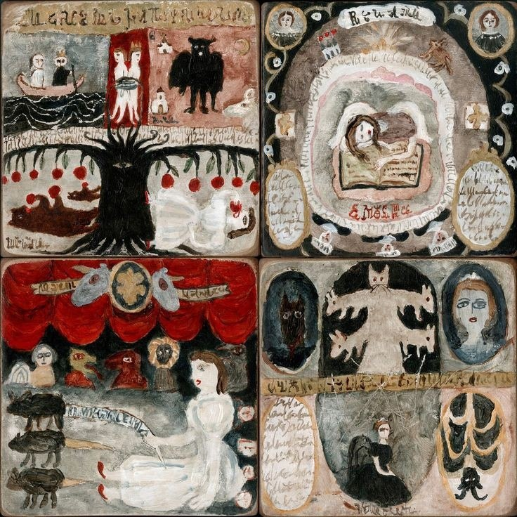

как и обещал, несколько вещей:
- клип на Pagan Poetry björk. Бьорк — легенда, не буду расписывать. короче, Человек делает Искусство;
- клип на forever charli xcx (компиляция/коллаж из видеороликов фанатов). её карантинный альбом how i'm feeling now стал вехой в жанре гиперпопа и блаблабла, но это неважно, а важно что он красивый, искренний и мало на что похож;
- неожиданная AMV'шка на Кровавый чай и красную ниточку , найденная мной случайно какое-то время назад. тогда это было даже жутко, потому что совсем незадолго до этого я узнал про группу Театр яда (экспериментальную, странную, чем-то напоминающую 4ПБ, но работа с языком там совсем другого характера, — я бы сказал, преимущественно фонетическая), и тут же где-то в ВК наткнулся на это видео. а потом ещё на картинку —>  <— крысы-мыши, запретные плоды, фарфоровые девочки, неразборчивые письмена, чёрное/красное/белое — игра случая + недосып + магическое мышление творят настоящие чудеса — в общем, делюсь чудесным (или по крайней мере красивым).
- альбом Divorce Lawyers I Shaved My Head by Jordaan Mason. надрывно, нежно. и пусть темы могу показаться "специфическими" (гендерный поиск, женитьба-развод и др.), на самом деле там всё очень даже обще-человечно. самобытная система образов (эти лошади, собаки, птичьи гнёзда, вивьенские девочки*), почти физиологичный и вместе с тем поэтически свободный язык (чего только стоит открывающая строчка My mouth is filled with his ovaries). мой друг Марк сказал как-то, что поэзия здесь по-английски изящная и нетяжеловесная, и по-русски так, к сожалению, (пока) невозможно писать. т.н. «хайлайты» (но прослушивания достойно, конечно, всё): Organs for Oceans, Racehorse: Get Married!, ____ is Water. всё просто: про то, как всё сложно, про близость и невозможность близости, про секс, про людей; голоса переплетаются, мужские и женские. проступают друг через друга — и целый оркестр на фоне. точные тексты есть тут, почитать одну развёрнутую интерпретацию можно здесь.
как-то так. может, вспомню что-то ещё